Documentación técnica del proyecto: aplicación móvil (Flutter), API backend (Node.js + MySQL) y panel administrativo web. Incluye arquitectura, funcionalidades y capturas de pantalla.
Variedades Genali es un sistema completo para administrar una tienda de ropa, calzado y accesorios. Permite gestionar el catálogo de productos con fotos, registrar ventas que descuentan el inventario en tiempo real, administrar empleados y consultar reportes. El sistema se compone de tres partes que comparten una misma base de datos:
Hecha en Flutter (Dart). Para uso diario de gerentes y empleados: catálogo, ventas, favoritos, perfil y panel de gerencia.
Servidor en Node.js + Express con Sequelize y base de datos MySQL. Expone los endpoints REST y guarda las fotos de productos.
Panel administrativo en HTML/CSS/JS servido por el propio backend. Dashboard, productos, movimientos, estadísticas y usuarios.
MySQL con las tablas Users, Products y Sales. Las tres partes leen y escriben los mismos datos.
Móvil: FlutterDarthttpimage_pickeronesignal_flutter
Backend: Node.jsExpress 5SequelizeMySQL 8bcryptmultercorsdotenv
Web: HTML5CSS3JavaScriptSVG icons
El servidor corre en http://localhost:3000 y expone estos endpoints REST:
| Método | Ruta | Descripción |
|---|---|---|
| POST | /usuarios/login | Inicio de sesión (devuelve rol y datos del usuario) |
| GET | /users | Listar usuarios/empleados |
| POST | /usuarios | Crear usuario/empleado |
| DELETE | /users/:id | Eliminar empleado |
| GET | /productos | Listar productos (solo activos) |
| POST | /productos | Crear producto (con foto, multipart) |
| PUT | /productos/:id | Editar producto |
| DELETE | /productos/:id | Eliminar producto |
| POST | /ventas | Registrar venta (descuenta stock) |
| GET | /ventas | Listar ventas / movimientos |
Las imágenes de productos se guardan en backend/uploads/ y se sirven en /uploads/.... El panel web se sirve en /panel/.
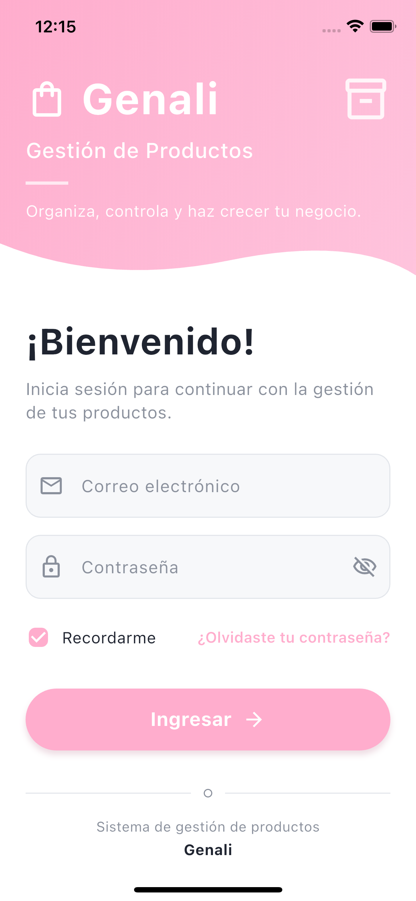
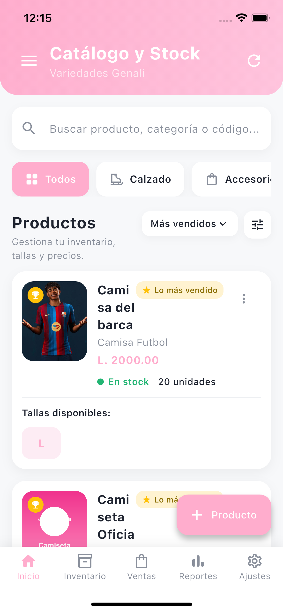
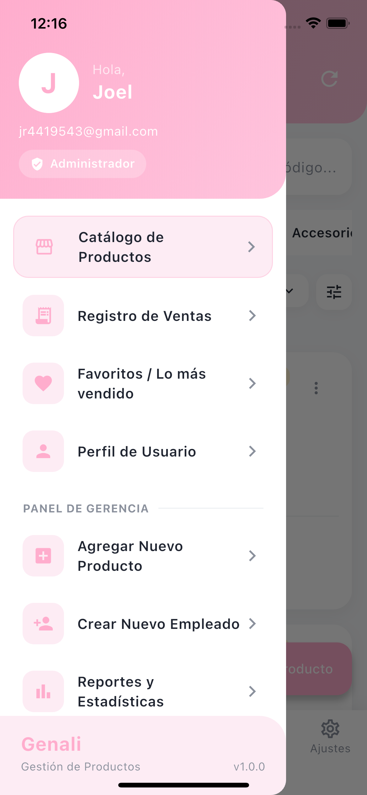
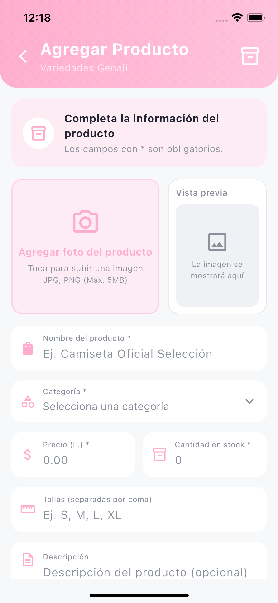
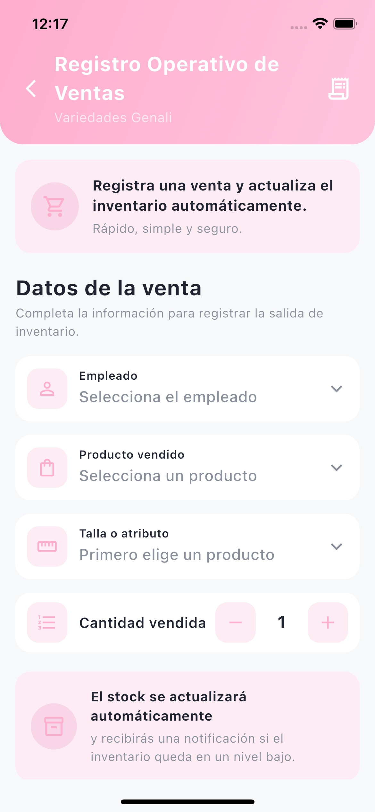
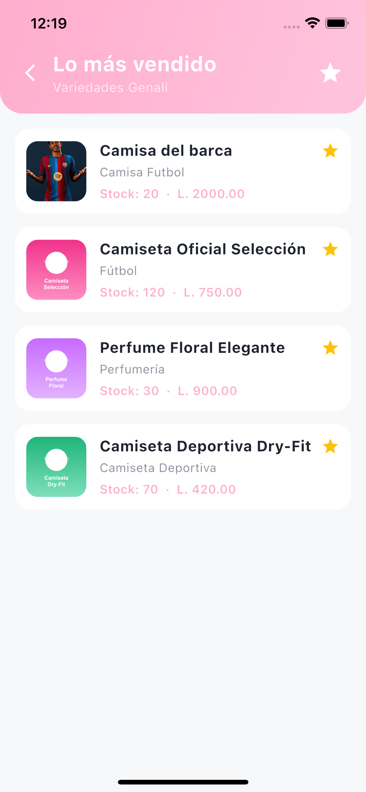
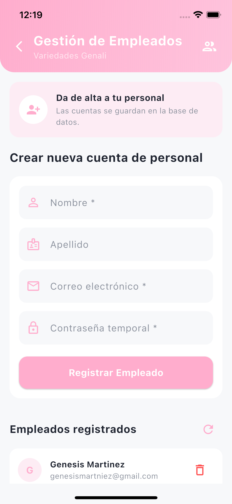
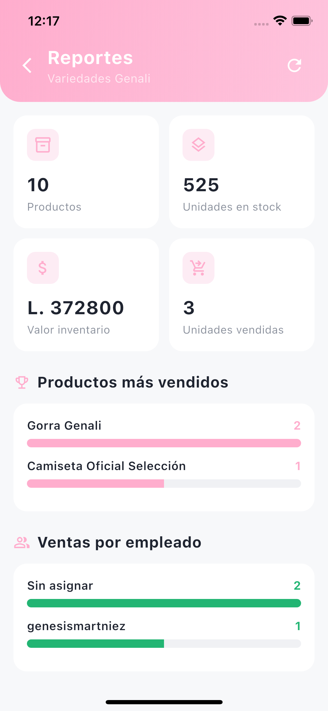
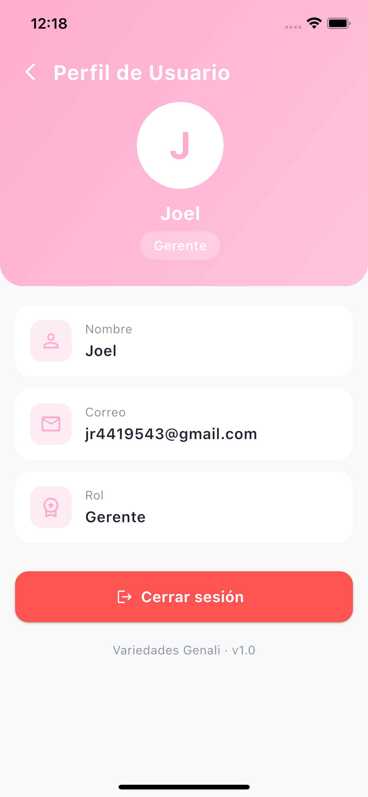
Panel de escritorio con el mismo diseño y color de la app. Accesible en http://localhost:3000/panel/
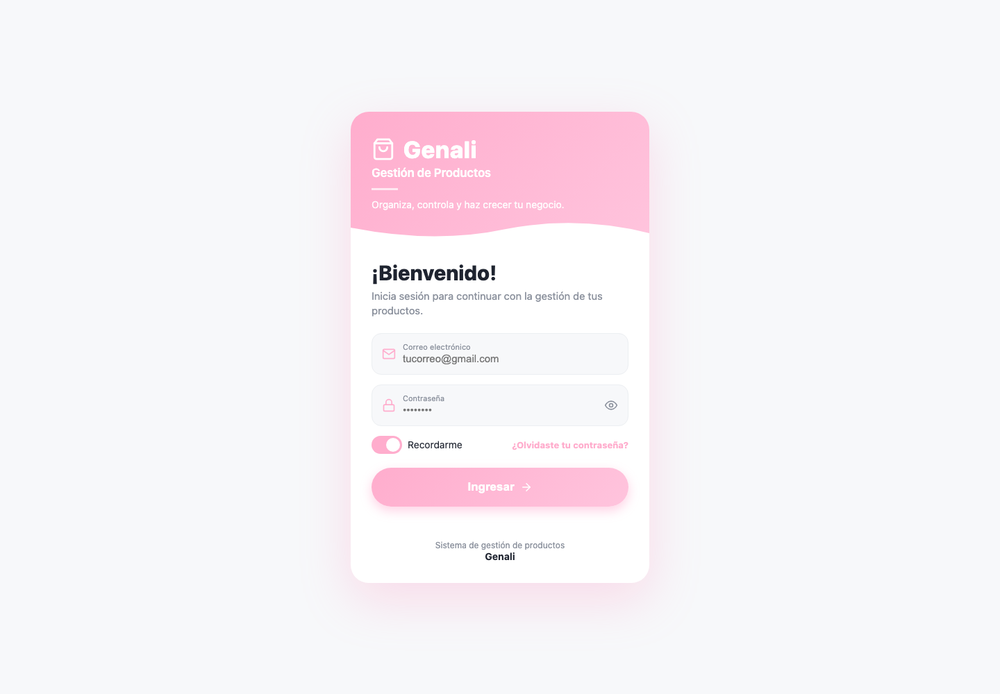
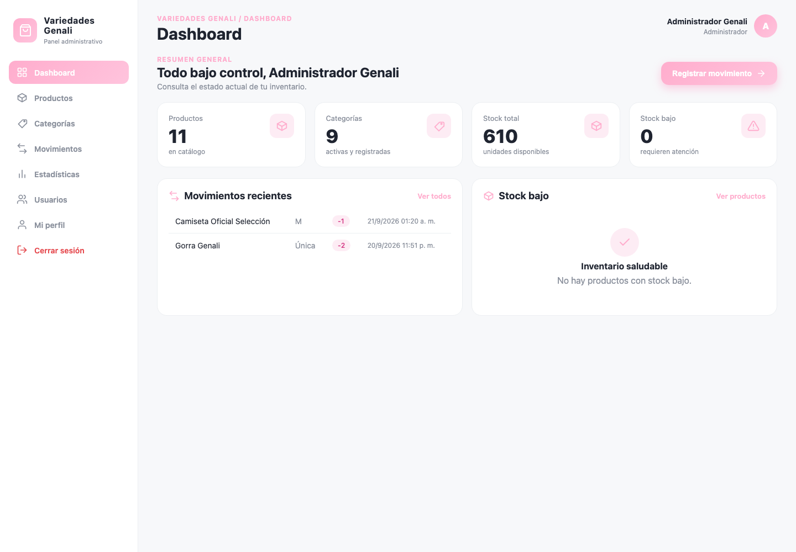
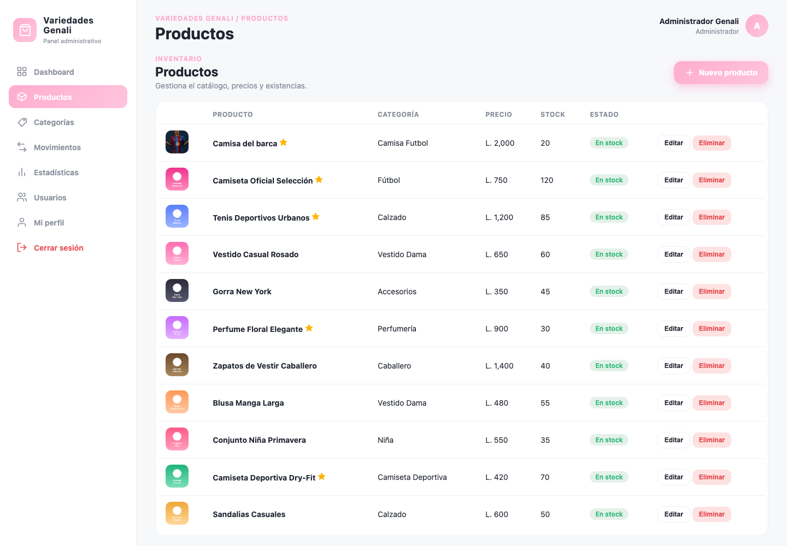
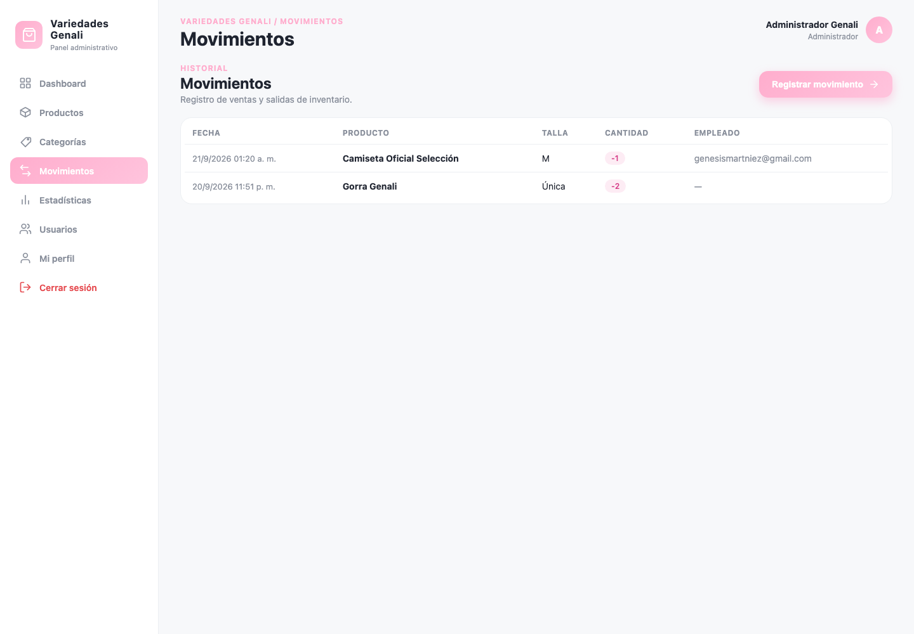
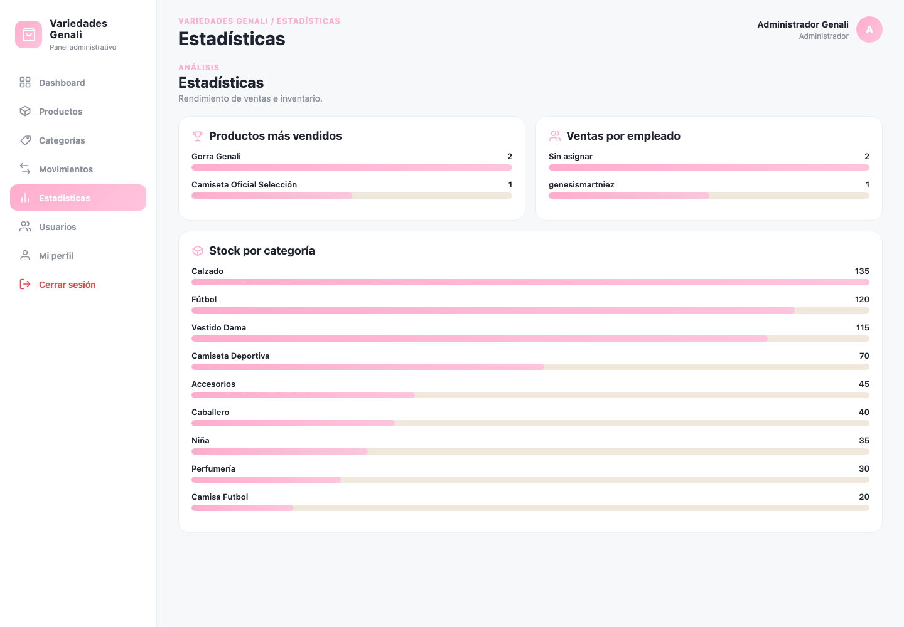
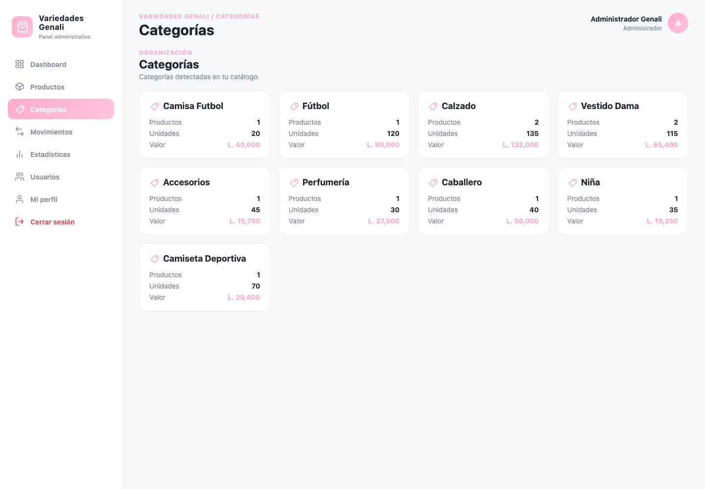
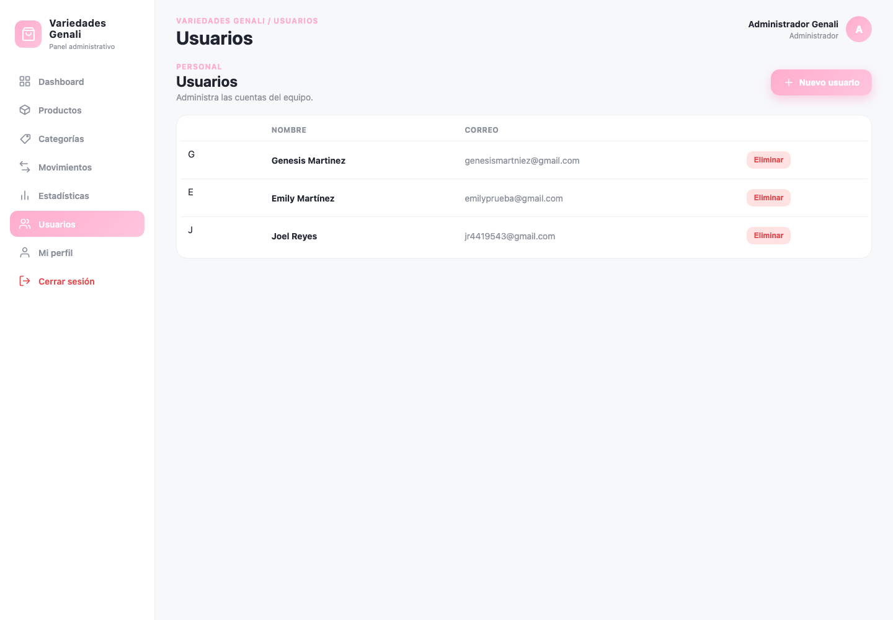
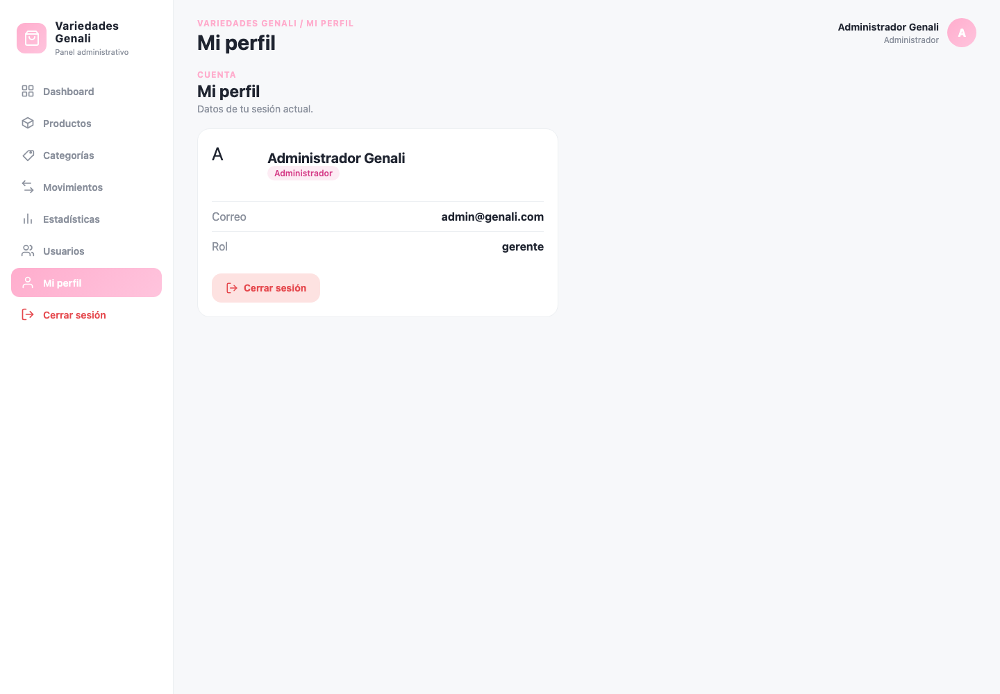
Importar el archivo backend/genali_shop.sql en MySQL Workbench (crea la base genali_shop y la tabla de usuarios).
Configurar la contraseña de MySQL en backend/.env y arrancar:
Debe mostrar «Backend corriendo en http://0.0.0.0:3000» y «Base de datos sincronizada correctamente».
Abrir en el navegador: http://localhost:3000/panel/